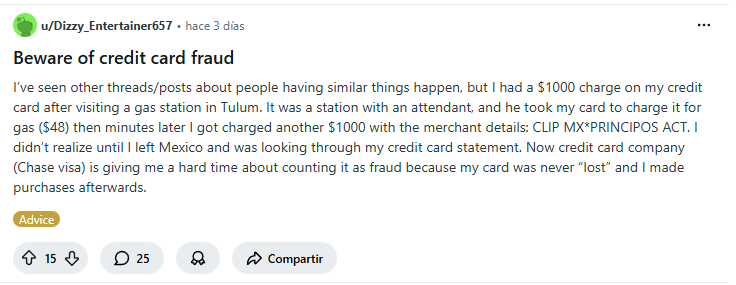
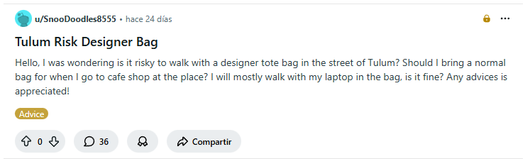

Reddit es una página web donde millones de personas de todo el mundo comparten cosas, hablan entre sí y votan sobre lo que les gusta o no les gusta. Puedes pensar en Reddit como un enorme tablero de anuncios en internet donde la gente pone fotos, videos, noticias, preguntas, chistes y casi cualquier cosa que se te ocurra.
¿Cómo funciona?
La página está dividida en miles de comunidades más pequeñas llamadas "subreddits". Cada subreddit trata sobre un tema específico. Por ejemplo, hay subreddits sobre gatos, cocina, videojuegos, películas, ciencia, deportes, y muchísimas cosas más. Si te interesa algo, probablemente existe un subreddit sobre eso.
Los nombres de los subreddits siempre empiezan con "r/" seguido del tema. Por ejemplo, r/funny es para cosas graciosas, r/news es para noticias, y r/aww es para fotos tiernas de animales. Cada subreddit tiene sus propias reglas que debes seguir cuando publicas algo ahí.
¿Qué puedes hacer en Reddit?
Primero, puedes leer todo sin tener una cuenta. Pero si quieres participar, necesitas crear una cuenta gratis. Con una cuenta puedes hacer varias cosas:
Puedes publicar contenido, ya sea texto, fotos, videos o enlaces a otras páginas web. Puedes hacer preguntas y otras personas te responderán. También puedes comentar en las publicaciones de otros usuarios para dar tu opinión o agregar información.
Lo más importante de Reddit es el sistema de votos. Cada publicación y cada comentario tiene dos flechas: una hacia arriba y otra hacia abajo. Si algo te gusta o te parece útil, le das click a la flecha hacia arriba (upvote). Si no te gusta o no aporta nada, le das a la flecha hacia abajo (downvote). Las publicaciones con más votos positivos aparecen primero en la página.
¿Por qué la gente usa Reddit?
Hay muchas razones. Algunas personas lo usan para mantenerse informadas sobre noticias y eventos actuales. Otras lo usan para aprender cosas nuevas sobre sus pasatiempos favoritos. Muchos van a Reddit para reírse con memes y videos graciosos. También hay gente que busca consejos sobre problemas personales, trabajo, relaciones o salud.
Una cosa especial de Reddit es que puedes ser anónimo. No tienes que usar tu nombre real ni poner tu foto. Esto hace que la gente se sienta más libre para compartir experiencias personales o hacer preguntas que tal vez no harían en otras redes sociales como Facebook o Instagram.
Subreddits populares
Algunos de los subreddits más grandes y visitados incluyen r/AskReddit, donde la gente hace todo tipo de preguntas interesantes a la comunidad. También está r/todayilearned donde las personas comparten datos curiosos que acaban de aprender. El subreddit r/worldnews es muy popular para estar al día con noticias internacionales. Y r/gaming reúne a millones de personas que les gustan los videojuegos.
La cultura de Reddit
Reddit tiene su propia forma de ser. Los usuarios de Reddit (llamados "redditors") tienen su propio lenguaje y chistes internos. Por ejemplo, cuando algo te hace reír, puedes escribir "LOL" o cuando estás de acuerdo con alguien, escribes "This" o "Esto".
También existe algo llamado "karma" que es la suma de todos los votos positivos que has recibido en tus publicaciones y comentarios. Tener mucho karma no te da nada especial, pero algunas personas lo ven como una señal de que participas mucho y aportas contenido bueno.
¿Quién creó Reddit?
Reddit fue creado en 2005 por dos estudiantes universitarios llamados Steve Huffman y Alexis Ohanian. Empezó como un proyecto pequeño pero creció muchísimo. Ahora es uno de los sitios web más visitados del mundo, con más de 500 millones de visitantes cada mes.
Conclusión
En resumen, Reddit es como una mezcla entre un foro de discusión, una red social y un sitio de noticias. Es un lugar donde puedes encontrar información, entretenimiento, ayuda y comunidad. Aunque puede ser confuso al principio, una vez que entiendes cómo funciona, puede convertirse en una fuente valiosa de contenido interesante sobre prácticamente cualquier tema que te importe.
Mi Experiencia Investigando Quintana Roo en Reddit
Posteado: Enero 30, 2026
Conclusión
Durante mi búsqueda en el sitio web de Reddit, encontré información valiosa sobre la situación actual de Quintana Roo en otros medios. Temas recurrentes incluyen: la seguridad en ciudades turísticas como Tulum y Cancún, problemas con policías corruptos que extorsionan turistas, balaceras relacionadas con el narcotráfico, el contraste entre la riqueza turística del norte y el abandono del sur del estado, y cuestiones de infraestructura deficiente en diferentes edificios, hogares o establecimientos, esto ademas de la inseguridad creciente, especialmente en zonas turísticas como Tulum; corrupción policial que afecta tanto a turistas como residentes; disparidad económica entre el norte turístico y ciudades como Chetumal; y una infraestructura deteriorada que contrasta con la imagen de un lugar hermoso para turistas que se vende internacionalmente.
Capturas de Pantalla Relevantes
Extorcion policial - Experiencias de extorsión policial reportadas
Fraude - Advertencias sobre fraude de tarjeta de crédito

Inseguridad - Discusiones sobre seguridad en zonas turísticas

Post de Reddit
Posteado: Enero 30, 2026
Por mala suerte, todas las comunidades donde yo quise compartir informacion con su comunidad, tienen un sistema de auto moderacion que evita que cuentas nuevas posteen contenido en sus comunidades hasta cierto tiempo, por lo que me fue imposible realizar esta tarea.
PikChart
Posteado: Febrero , 2026
Después de que usamos Piktochart, la verdad es que me gusto muchisimo y nos dejo muy buen sabor de boca. Desde que entramos nos dimos cuenta de lo facil que es usar esta web,ya que todo esta muy bien ordenado,a la vista y no te pierdes cuando avanzas.No necesitas saber nada de diseño ni usar programas muy complicados,ya que te va guiando y facilitando todo. Algo que me gusto muchisimo fue la variedad y cantidad de plantillas que tiene para usar. Hay muchisimos colores, gráficos y estilos distintos, lo que hace que los trabajos se vean mucho más bonitos y no aburridos y repetitivos como en otros lados. Además, puedes cambiar casi todo, así que es fácil adaptar el diseño a lo que te pidan o a lo que quieras expresar.